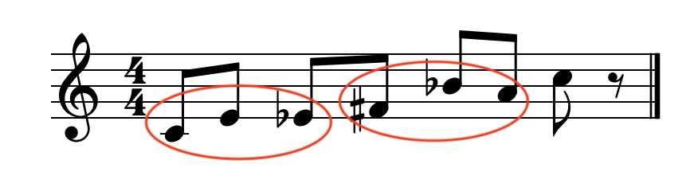
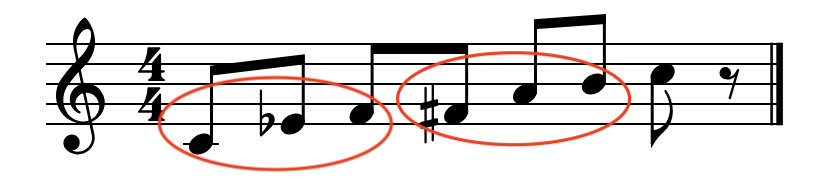
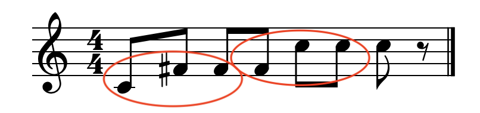
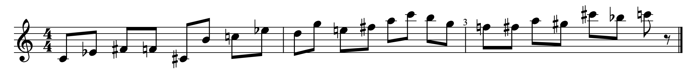

GeCo-Tool · Mathematical Framework
Let us consider the most general sequence, namely the multidimensional sequence satisfying the rule:
As already discussed in the document on binary sequences, the sequence length $L$ depends only on the jump:
We are interested in understanding why $L$ depends on $S$ and not on the "internal composition" of the interval sequence $\{I_{n_1}, I_{n_2}, \ldots, I_{n_K}\}$.
After each complete $K$-tuple of transpositions, the note has advanced by $S = \sum n_i$ semitones with respect to the starting note. Therefore, the cycle ends when the note $X$ (for example C4) is reached again — namely when the number $N$ of applied tuples multiplied by $S$ is a multiple of 12.
Mathematically, the closure condition of the cycle is:
This is exactly the closure condition of the cycle, independently of how $S$ is distributed among $\{I_{n_1}, I_{n_2}, \ldots, I_{n_K}\}$.
At every "intermediate" step (inside the tuple), the note changes, but these steps do not influence the termination condition, which only checks the note after each complete tuple. Let us consider an example in the case of a ternary sequence $(i,\,j,\,k)$ with $S = i + j + k = 6$.
With $S=6$: $\gcd(6,12)=6$, therefore $n = 12/6 = 2$ tuples. The generated notes are $1$ (initial) $+ 3 \times 2 = 7$. We examine three choices of intervals: $(4,{-1},3)$, $(3,2,1)$, and $(6,0,0)$.



Observe how the tuples, highlighted by the red ellipse, repeat in all three cases with a jump of $S = 6$ semitones (that is, a diminished fifth).
The sequence lives on $\mathbb{Z}_{12}$ (the 12 pitch classes). Applying a tuple of intervals whose sum is $S$ is equivalent to making a step of size $S$ in $\mathbb{Z}_{12}$. The cycle is the orbit of 0 under the map $x \mapsto x + S \bmod 12$. The internal structure of the tuple is "invisible" to the closure condition.
If we think of the 12 notes as the numbers $0, 1, 2, \ldots, 11$ arranged on a circle ($\mathbb{Z}_{12}$):
The map $x \mapsto x + S \bmod 12$ means: "start from $x$, move forward by $S$ steps, and if you exceed 11, restart from 0".
The orbit of 0 is the sequence of visited points obtained by repeatedly applying the map until returning to 0:
The number of steps before returning to 0 is exactly:
The orbit is $\{0, 6\} = \{\mathrm{C},\, \mathrm{F}{\sharp}\}$.
We return to 0 in two steps. The intermediate tuples $(i,j,k)$ do not change this fact: whether we reach F♯ through $(2,2,2)$ or through $(5,1,0)$, the circle only sees the overall jump of 6.
Let us return to the most general multidimensional case. Suppose that $K=11$ is the number of intervals. The length $L$ of a sequence with jump $S$ is:
To give a practical example, let (3,3,-1,-4,-2,1,3,-1,5,-3,2) be a sequence with a jump S = 6. Since gcd(6,12) = 6, we have L = 2 × 11 + 1 = 23. The following figure shows the generated musical sequence.
